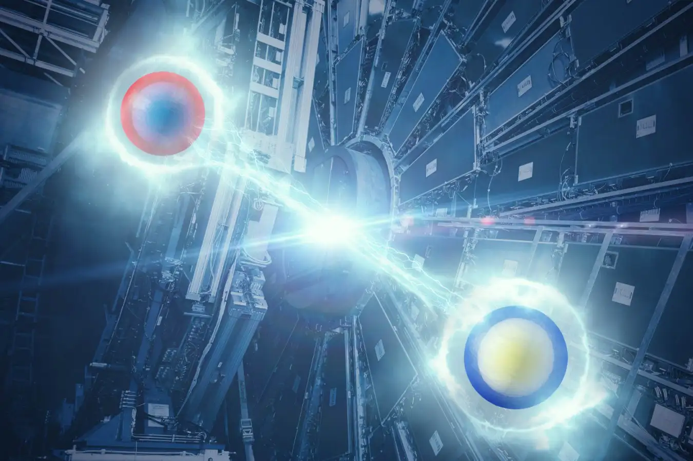

HWW quantum information measurement
Physics question: Can quantum entanglement between the two W bosons in \(H \to WW^* \to \ell\nu\ell\nu\) be measured at the LHC?
My contribution: From the kickoff stage, I connected missing-information reconstruction with spin-correlation observables and studies of different W-boson polarization states.
Evidence: My MSc thesis and contributions to the ATLAS analysis document cover W-polarization and reconstruction studies, as well as analysis-level validation.
Why it matters: This work provides a transferable foundation for physics-informed reconstruction and inference in Higgs, diboson, and other partially observed collider signatures.
